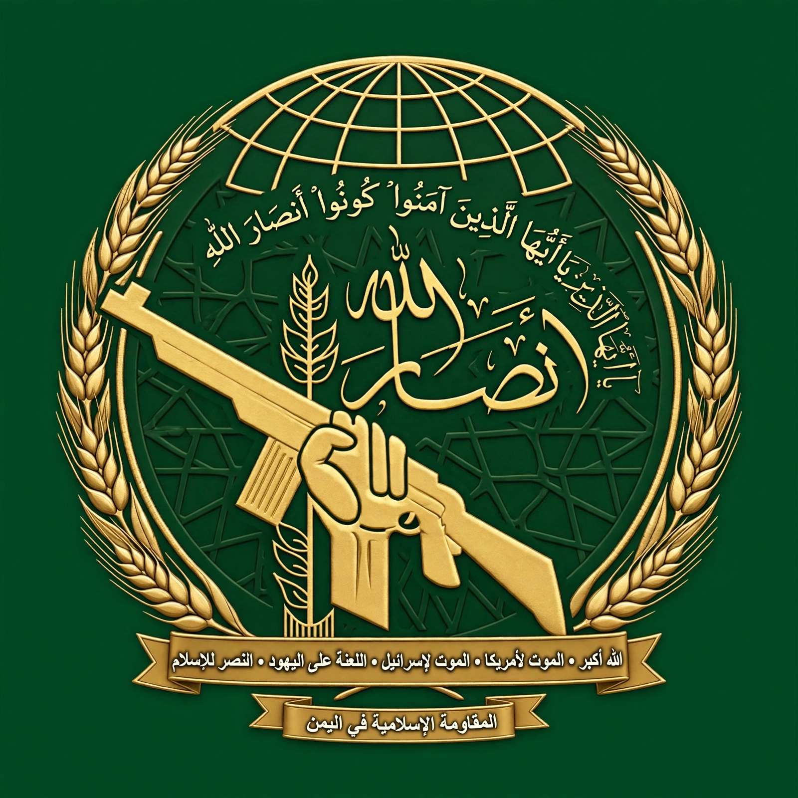

| Houthi movement (Ansar Allah) | |
 Emblem of Ansar Allah | |
| Leaders | Hussein al-Houthi (founder, d. 2004); Abdul-Malik al-Houthi |
|---|---|
| Founded | 1990s (as the Believing Youth); armed from 2004 |
| Headquarters | Saada / Sanaa, Yemen |
| Ideology | Zaydi revivalism, anti-imperialism |
| Base | Northern Yemen; controls Sanaa since 2014 |
The Houthi movement, officially Ansar Allah ("Supporters of God"), is a Zaydi Shia Islamist political and military movement that emerged from Saada Governorate in northern Yemen in the 1990s. It takes its name from the al-Houthi family; its founder, Hussein Badreddin al-Houthi, was killed by the Yemeni army in 2004, after which his brother Abdul-Malik al-Houthi assumed leadership. Since 2014 the movement has controlled Yemen's capital, Sanaa, and much of the country's north-west, fighting a civil war against the internationally recognised government and a Saudi-led coalition.
The movement began as the "Believing Youth", a revivalist organisation promoting Zaydi religious education in the 1990s amid the spread of Salafism in Yemen's north and the marginalisation of the northern highlands after unification. Zaydism, named for Zayd ibn Ali, had ruled much of Yemen for a millennium until 1962. Hussein al-Houthi's lectures combined religious revival with denunciations of the United States and Israel — reflected in the movement's slogan — and of President Ali Abdullah Saleh's alliance with Washington.
Between 2004 and 2010 the Houthis fought six wars against the Yemeni state. They participated in the 2011 Yemeni uprising, expanded their territory during the transition, and in September 2014 seized Sanaa. In March 2015 a Saudi-led coalition intervened militarily to restore President Hadi, beginning a devastating war and blockade that produced one of the world's worst humanitarian crises. A UN-brokered truce in 2022 sharply reduced fighting, though a final settlement remained elusive.
From November 2023, in stated solidarity with Palestinians during the Gaza war, the Houthis attacked commercial shipping in the Red Sea and Gulf of Aden with missiles and drones, disrupting global trade and prompting US- and UK-led airstrikes on Houthi targets. The campaign elevated the movement's regional profile; several governments designate Ansar Allah as a terrorist organisation.